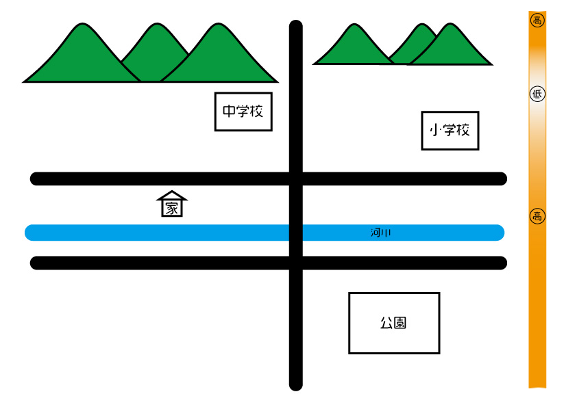

大雨洪水の時はどう逃げる？
大雨洪水の場合、どこに避難すれば良いでしょうか。
それは標高が高い避難所です。
一番近い避難所が自分のいるところより低い場所にあった場合、
むやみにそこに行ってはいけません。
浸水している可能性もありますし、何より移動の際が危険です。
川のように水が流れる道を歩くのは危険すぎます。
大雨の際は、標高が高く浸水していない場所を選んで避難しましょう。

※地名は隠してあります。
下の地図の右側は、標高が高いほど濃いオレンジ色で表しています。
この場合、近いからと言って中学校や小学校に避難してはいけません。
標高が低いため浸水する可能性があり、実際に過去に浸水しています。
大雨洪水の場合は公園側に避難するのが良いでしょう。
